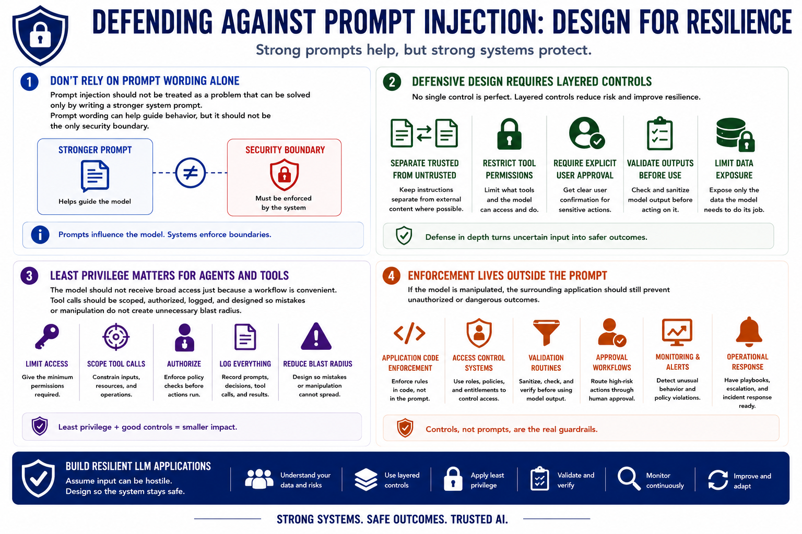

Prompt Injection
Defensive Design Principles
Connecting to LMS... Progress: in progress
Version 1.0 | Date: 2026-06-16 | AI security guidance evolves quickly. Verify current recommendations against official project, vendor, and security guidance.

Narration
Prompt injection should not be treated as a problem that can be solved only by writing a stronger system prompt. Prompt wording can help guide behavior, but it should not be the only security boundary.
Defensive design requires layered controls. Applications should separate trusted instructions from untrusted content where possible, restrict tool permissions, require explicit user approval for sensitive actions, validate outputs before downstream use, and limit data exposure.
Least privilege matters for agents and tools. The model should not receive broad access just because a workflow is convenient. Tool calls should be scoped, authorized, logged, and designed so mistakes or manipulation do not create unnecessary blast radius.
If the model is manipulated, the surrounding application should still prevent unauthorized or dangerous outcomes. That means enforcement belongs in application code, access-control systems, validation routines, approval workflows, monitoring, and operational response, not just inside the prompt.